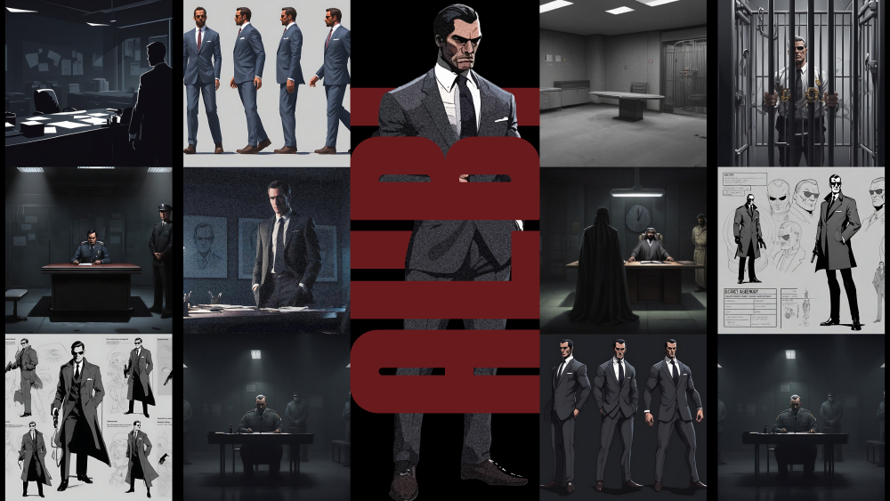
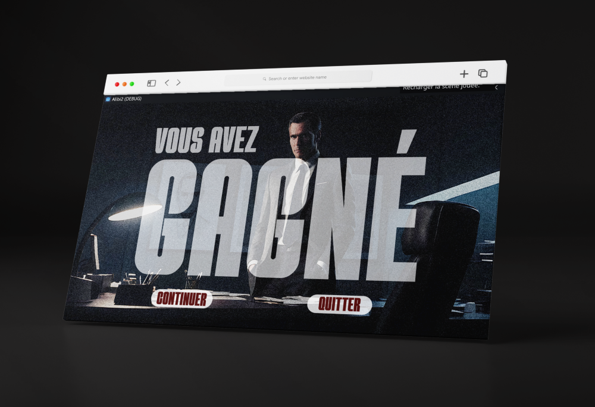

Participation à la GameJam sur le thème "Frontière", avec la création d’un jeu d’espionnage narratif développé sous Godot en une semaine, de la conception à la réalisation.

Créé dans le cadre de la GameJam sur le thème "Frontière", Alibi plonge le joueur dans la peau d’un agent secret chargé de missions internationales. À chaque mission, le joueur doit mémoriser un alibi détaillé. Lors d’un interrogatoire sous pression mené par le commissaire James, la moindre hésitation peut trahir sa couverture. Le jeu explore la frontière entre vérité et mensonge, mémoire et oubli.

Le design de Alibi a été pensé pour plonger le joueur dans une ambiance tendue et immersive. Un univers graphique épuré, inspiré des romans d'espionnage, a été décliné pour les différents écrans du jeu. Le travail a inclus la création de l’identité visuelle, la charte graphique, les interfaces, les assets du jeu, ainsi que des éléments de communication comme les affiches et bannières pour présenter le jeu dans le cadre du challenge.
Le développement du jeu a été réalisé avec Godot Engine, permettant une gestion fluide des scènes, des dialogues et des interactions complexes avec le joueur. L'accent a été mis sur la logique de jeu, la navigation entre les phases de briefing et d’interrogatoire, et la gestion des erreurs de l’alibi. Le moteur a permis une rapidité de prototypage essentielle dans le cadre contraint d’une GameJam d’une semaine.
Godot Engine